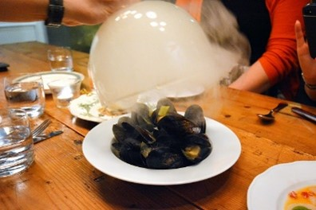
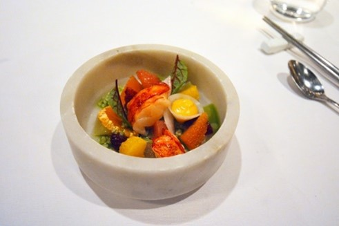
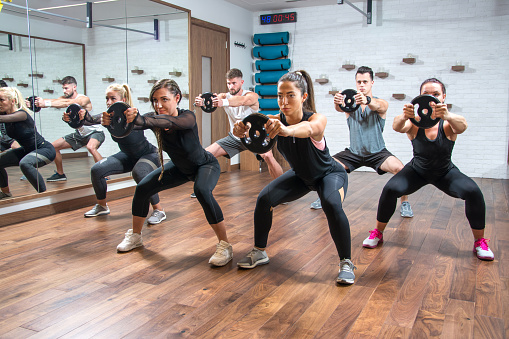
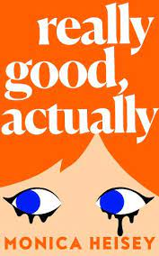
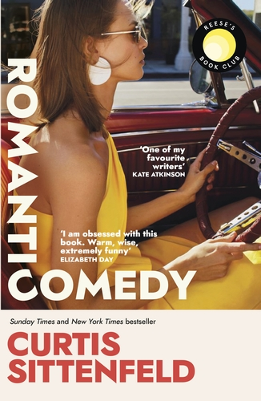
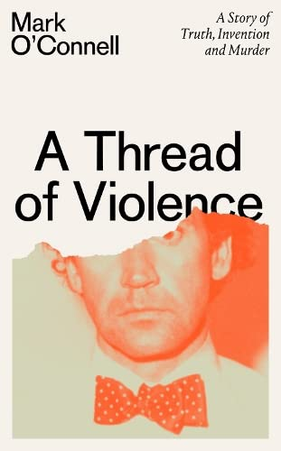

Hailed as one of the most popular “western style” Japanese foods in Japan,
tonkatsu consists of a breaded, deep-fried pork cutlet (not to be confused with “tonkotsu,” which is pork bone broth).
My lunch pick at Mr. Tonkatsu is their “pork loin katsu with cheese set” which comes with a generous portion of cheese-stuffed pork katsu served with a side of shredded cabbage, miso soup and steamed rice.
Their katsudon with pork loin katsu, poached egg and rice is also another one of my favourites.

KHAO SAN ROAD
Sometimes there's nothing more comforting than a bowl of noodles. Case in point: Khao San Roads's beef brisket khao soi.
This modern Thai eatery is often packed during dinner time so I recommend grabbing a quick lunch there instead.
Have a glass of cold refreshing Thai iced tea with your bowl of piping hot khao soi and I guarantee your life will never be the same again.
BORALIA
Boralia offers one of the tastiest and most interesting dinners I've had in a very long time.
Chef and owners Evelyn Wu and Wayne Morris focus on showcasing Canada's indigenous cuisine;
think dishes inspired from historic recipes of Canada's early settlers and First Nations, with some plates dating back as far as the 1600's.
The l'eclade (mussels smoked in pine needles), braised whelk, and pigeon pie are not to be missed.

1. Strive for at least 150 minutes of exercise per week
Break it down to 40 minutes 4 days a week,
30 minutes 5 days a week, or however you'd like!
Choose what works best for your lifestyle.

2. Cut your coffee calories
Cut calories in your morning cup of coffee by skipping the cream and sugar.
Instead, try drinking it black or reducing your amount of each.
Here are some more healthy ways to flavor your morning cup of joe.
3. Keep a fitness journal
Tracking keeps you accountable,
and studies show that those who keep journals are more successful at weight loss than those who don't.
4. Pay attention to your thoughts
Thoughts are powerful; bring awareness to yours.
Do you encourage yourself with body positivity or hold yourself back with negativity?
Changing your mindset could be all it takes to get your health on track.
5. Eat the rainbow
Eat foods that are closest to their natural state as possible. Aim for whole, fresh foods in a rainbow of colors.
Here are some articles about maintaining a healthy lifestyle:
There are lots of new books due in 2023 which I'm looking forward to reading and my list continues to expand by the day.
All publication dates where known apply to the United Kingdom only.
There are some promising looking debut novels out in January including Really Good, Actually by Monica Heisey loosely based on the author's experience of getting divorced in her late 20s and We All Want Impossible Things by Catherine Newman about female friendship.
Death of a Bookseller by Alice Slater is one of the most intriguing crime fiction debut titles and will be published in April.

Romantic Comedy
Romantic Comedy by Curtis Sittenfeld is out in April and is about a sketch show comedy writer and her relationship with an A-list celebrity.
Also landing in April is The Memory of Animals by Claire Fuller which is about a woman who takes part in a vaccine trial with unexpected results.
Speak to Me by Paula Cocozza is described as “a love triangle between a wife, her husband, and his mobile phone” and is the author's second novel due in June.
Cocozza is the author of one of the most original debuts I have come across in recent years How To Be Human so I have high hopes for her new book.

3. Keep a fitness journal
In non-fiction, the award for eye-catching title of 2023 must surely go to Why Is This Lying Bastard Lying To Me? by Rob Burley which is a quote attributed to former Newsnight journalist Jeremy Paxman.
Due in May, the book will examine Burley's 25-year career in British political television and what the future holds for interviewing in an era of fake news.
Fighting For Life by Isabel Hardman is a history of the National Health Service and will be published in June in time for the NHS's 75th anniversary.
Hardman's book Why We Get The Wrong Politicians is one of the best books I've read about modern British politics and I hope her new book will be just as accessible.

A Thread of Violence
A Thread of Violence by Mark O'Connell (author of To Be a Machine and Notes From an Apocalypse) is a true crime book about the Malcolm Macarthur case and will be published in June.
In April, Bad Women by Hallie Rubenhold re-examines the murder of Belle Elmore by her husband Dr Crippen in 1910.
Raptors' Fred VanVleet fined $30,000 for publicly criticizing NBA referee
Toronto Raptors guard Fred VanVleet has been fined $30,000 for comments he made following the team's 108-100 loss to the Los Angeles Clippers on Wednesday.
Afterwards, the Raptors point guard paused for a moment and said, “I don't mind; I'll take a fine; I don't really care.”
“I thought Ben Taylor was f-g terrible tonight,” he began. “I think that most nights, you know, out of the three [referees], there's one or two that just f-k the game up. It's been like that a couple of games in a row. Denver was tough, obviously.”
“You come out tonight, competing pretty hard, and I get a bulls-t tech that changes the whole dynamic of the game, changed the whole flow of the game,” VanVleet continued.
“And you know, most of the refs are trying hard, I like a lot of the refs, they're trying hard, they're pretty fair and communicate well. And then you got the other ones who just want to be d-ks and just kind of f-k up the game. And no one's coming to see that s-t.”
VanVleet said he feels that Taylor has a personal issue with him, which the Raptors guard said would explain the number of technical fouls he's been handed during games in which Taylor has officiated.
On Wednesday, VanVleet expressed a level of remorse following his expletive-filled rant, saying his comments were “unprofessional for his standard” and that his emotions and frustrations got the best of him.
“[My comments] were for the better of the game,” VanVleet said. “I was emotional, like I said. It was a tough loss, things aren't going our way. I got caught up in the moment a little bit. You live, and you learn, and you move on.”
The 29-year-old point guard has racked up $19,000 worth of fines this season, the highest amount on the Raptors. According to Spotrac, Canadian guard Dillon Brooks, who plays for the Memphis Grizzlies, has been fined the most money this season ($54,000).